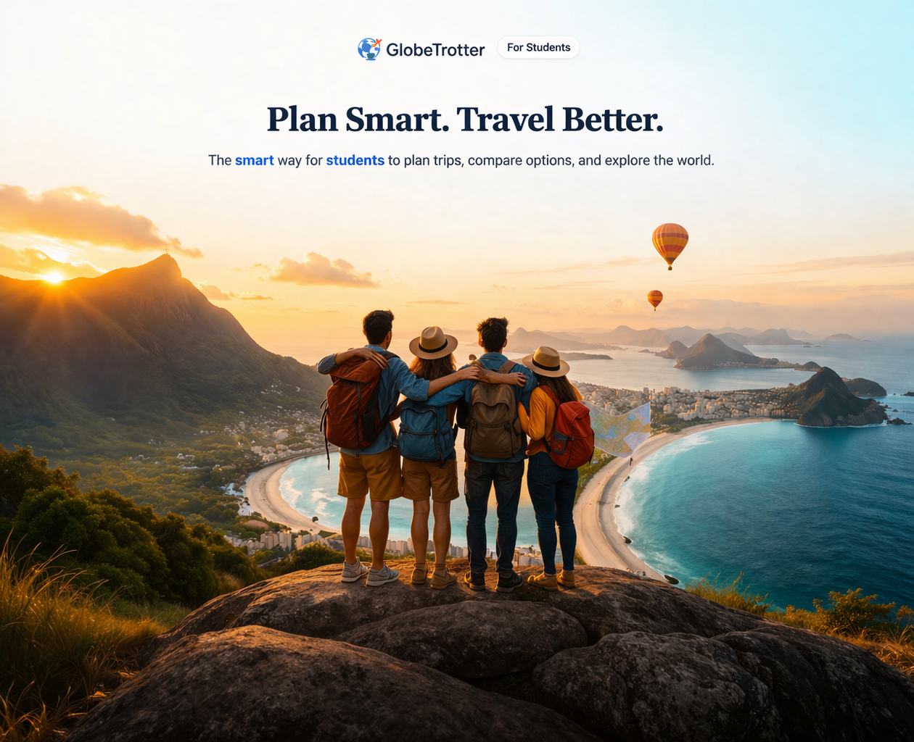
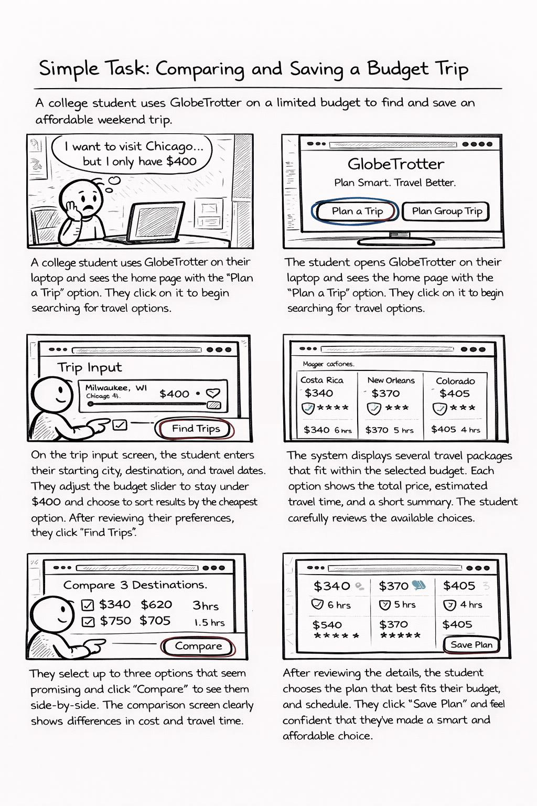
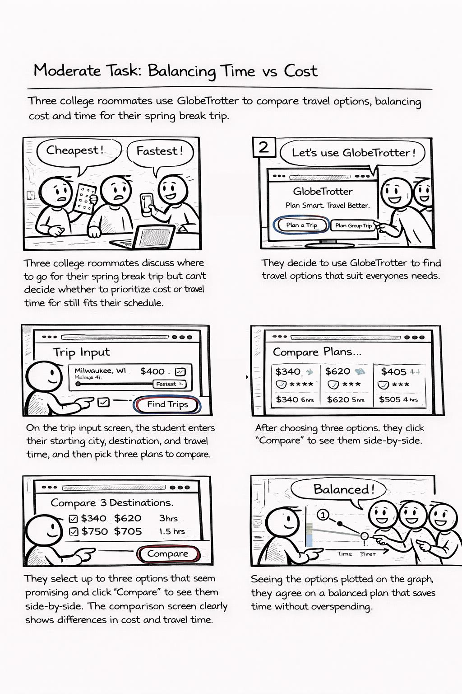
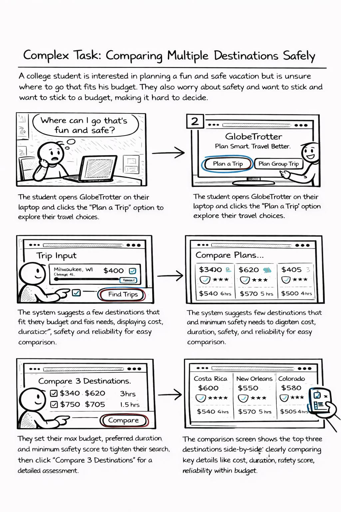

Plan Smart. Travel Better.
A student-focused travel planning system that helps compare trips, coordinate group decisions, and build itineraries in one place.
GlobeTrotter is a travel planning system designed for college students. It helps users search, compare, and plan trips without switching between multiple platforms. The system supports budget-based planning, comparison of travel options, and itinerary management.
We conducted semi-structured interviews with six college students to understand how they plan trips and what challenges they face. Participants included both undergraduate and graduate students with varying travel experience.
The study showed that students struggle with limited budgets, time constraints, and group coordination. Many reported that planning trips requires switching between multiple platforms, which makes the process time-consuming and stressful.
The following storyboards illustrate three levels of tasks supported by the system: simple, moderate, and complex travel planning scenarios.
A student plans a trip within a fixed budget, compares available options, and selects the best plan.

A group of students compares multiple travel options by balancing cost and travel time to make a shared decision.

A user manages an itinerary, explores nearby events, compares options, and adds selected activities to create a complete travel plan.
